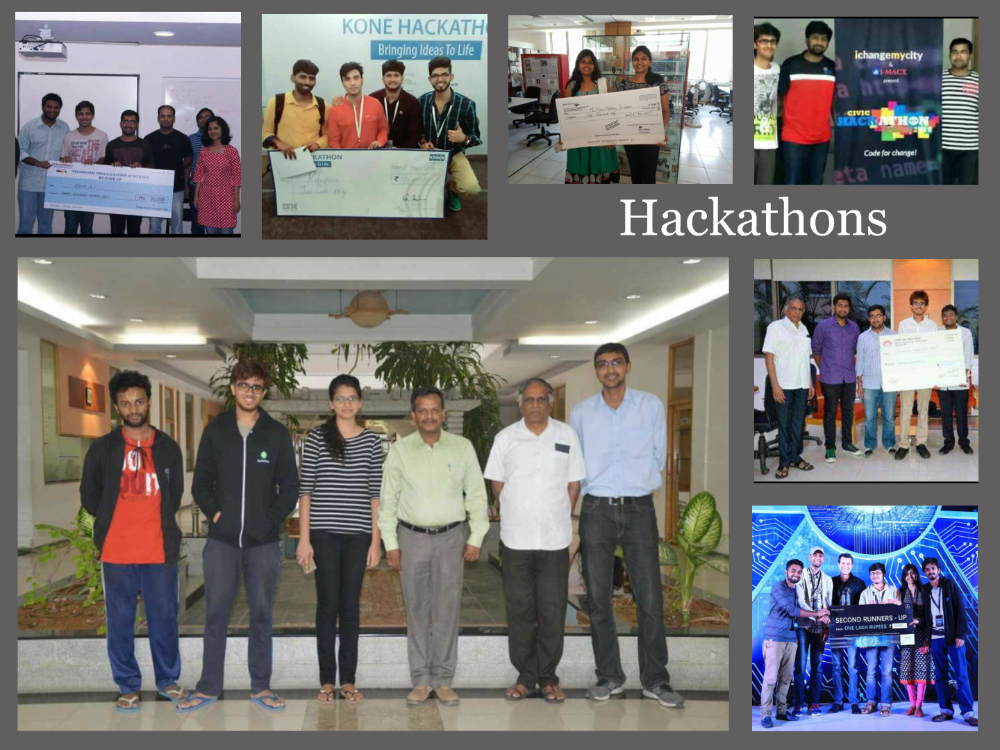
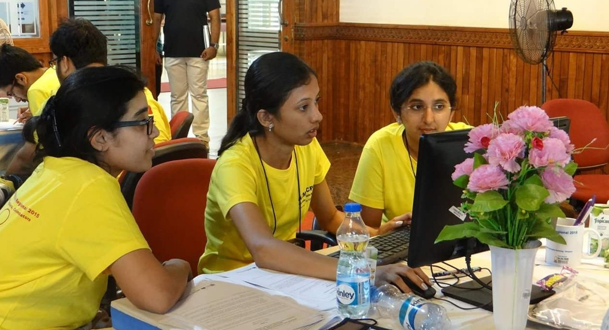
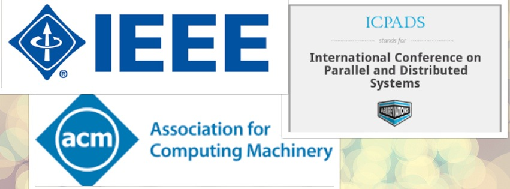

Achievements
Hackathons
Clear and concise coding is a practice that has been drilled into the students from first year. Having the right basics has allowed us to widen our horizons and students now venture into various coding competitions and hackathons. Many of them have won various plaudits on these two platforms making Iiitb a formidable force wherever they go.
The Students have actively participated and won prizes in a lot of Hackathons .
Some of these Hackathons are:
- Second Runners up in Mercedes Hack.Bangalore 2016 and selected as the team from India to represent Daimler in the Mobile World Congress(MWC), 2017 held in Barcelona. The team was allowed to showcase their idea on a global scale in the MWC.
- Represented India in Airvolution 2017 by Air Asia where they competed against 20 teams from 10 nations.
Coding Competitions
There is an active coding habit present in the students and they keep participating in various coding competitions to show their mettle. A few of the popular events where our iMtech students have stood out are:
- ACM ICPC 2017 World Finalist
- World Rank 6, HackerEarth International Women’s Hackathon Finale
- World Rank 5, Google Code Jam to I/O 2016 for Women
- World Rank 7, HackerRank Women's Cup 2015
- All India Rank 3 in Google APAC Test 2016
- Runner up in ACM ICPC Regional 2016
- Finalist in India Hacks Algorithm 2016
- Winner in Morgan Stanley Women Codeathon 2015, Runner up in Tesco Codeathon 2016, Finalist in Sears Dots and Arrows Challenge 2016, Rank 12 in Broadridge India CODE-BEE 2015
Research Projects
 At Iiitb, students are taught to be theoretically and conceptually strong. This, with the guidance from the professors, gives them the knowledge and skills required to pursue their research goals. As a part of their pursuits, they have written papers to bring their research out to public forums. Some of the papers have been published while a good lot has been submitted and is under process of publication.- Research paper titled 'A Logo-Based Approach for Recognising Multiple Products on a Shelf' published in Proceedings of 2016 SAI Intelligent Systems Conference
- Research paper titled 'A Low Cost Personalised Robot Language Tutor with Perceptual and Interaction Capabilities' presented at INDICON 2016 (held at IISc) and published in IEEE Xplore